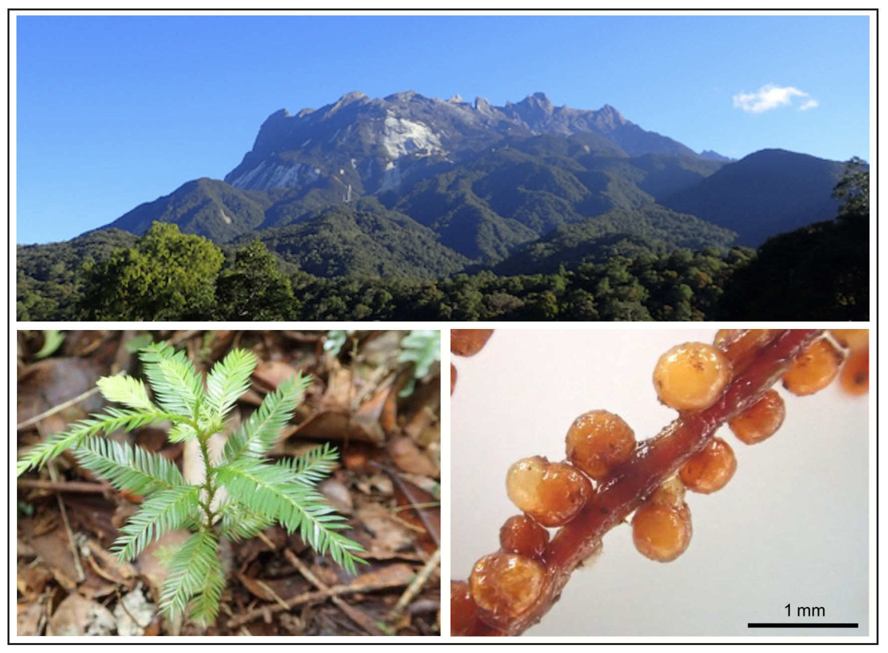

Research
Ongoing projects
Establishment of an environmental DNA-based cetacean monitoring framework in Hong Kong waters
- Leading (PI)
- RGC - General Research Fund
- HKD 1,323,889 (from 1 Sep 2024 - 31 Aug 2027)
Developing a non-invasive method to estimate the age of Chinese White Dolphins and Finless Porpoises using the DNA methylation rate
- Leading (PI)
- Marine Ecology Enhancement Fund (MEEF)
- HKD 581,400 (from 1 July 2024 - 30 June 2026)
- To be determined (from 1 July 2026 - 30 June 2027)
Research topics
Ecological community monitoring using environmental DNA
This project focuses on developing and applying an innovative community monitoring technique called environmental DNA (eDNA) analysis, which allows us to monitor and understand ecological community dynamics in nature. We have developed various eDNA techniques such as a quantitative eDNA monitoring technique (Ushio et al. 2018 Metabarcoding & Metagenomics; Ushio et al. 2023 eLife), a mammal eDNA detection method (Ushio et al. 2017 Molecular Ecology Resources), and more efficient laboratory protocols for eDNA analysis (Ushio 2019 Methods in Ecology and Evolution; Ushio et al. 2022 Environmental DNA).
Development and applications of novel statistical methods
Ecological community monitoring data can be noisy, and statistical analyses are required to extract essential information. Our research group has developed and applied various statistical methods to understand ecological community dynamics, including a method to evaluate fluctuating stability of natural ecological communities (Ushio et al. 2018 Nature), a method to detect causalities when time series data are highly synchronized (Kitayama et al. 2021 Journal of Ecology), and a novel machine learning approach that uses ecological dynamics as a computational resource (Ushio et al. 2023 Royal Society Open Science). Recently, we have proposed a unified framework for time-series based causality detection method (Osada et al. 2023 bioRxiv).
Integrating eDNA techniques and novel statistical methods
We are particularly interested in how these advanced statistical methods can be combined with eDNA techniques, and have already explored this intersection in several publications, including Ushio (2022) Proceedings of the Royal Society B, where we monitored a high-diversity community (>1,000 species) using the quantitative eDNA technique and analyzed interspecific interactions using nonlinear time series analytical tools. In Ushio et al. (2023) eLife, we analyzed 550 fish eDNA samples and quantified fish-fish interactions based on multispecies fish eDNA time series
Past projects
Plant-soil feedbacks in a tropical forest

Dr. Ushio has conducted research on plant-soil feedbacks in a forest ecosystem, with a primary focus on a tropical montane forest in Malaysian Borneo. This research aimed to understand the relationships among plant secondary metabolites, soil microbial communities, decomposition processes, and overall ecosystem dynamics.(see Ushio et al. 2017 Ecological Monographs).
Other research projects
See Researchmap.